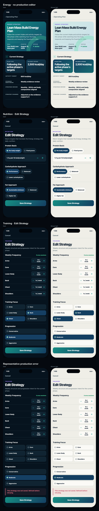
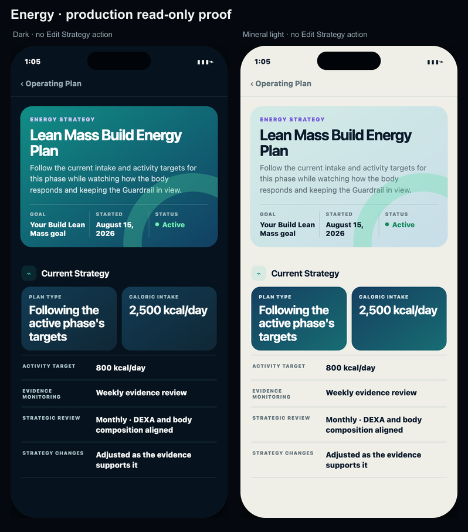
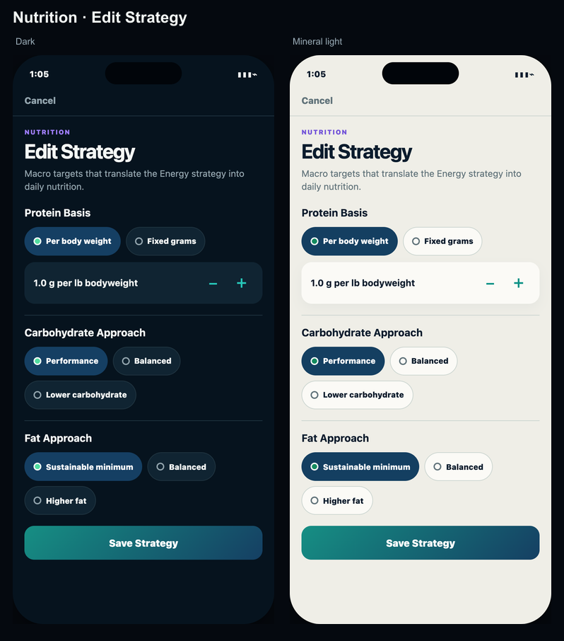
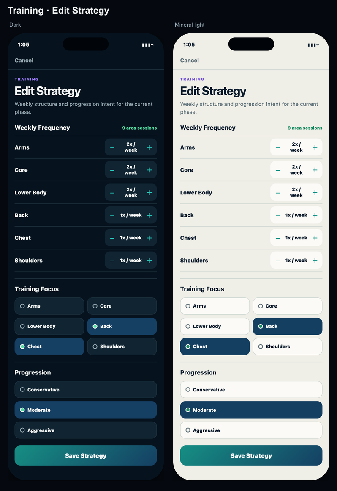
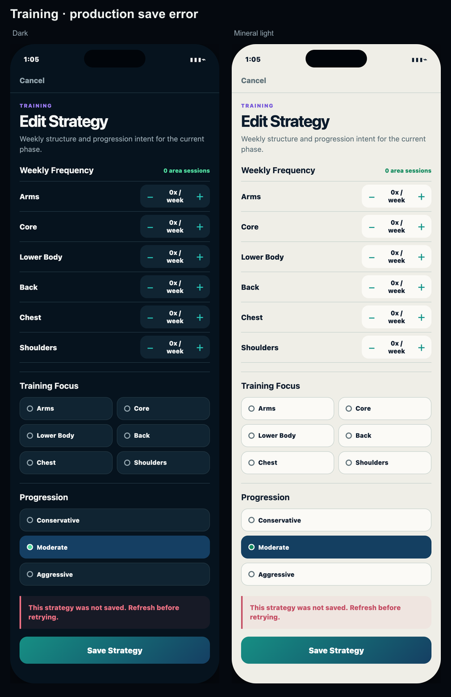

Operating Plan · Edit Strategy verification
Production reachability, exact editor fields and mutation behavior in dark/mineral light.

Focused proof




Production reachability, exact editor fields and mutation behavior in dark/mineral light.




